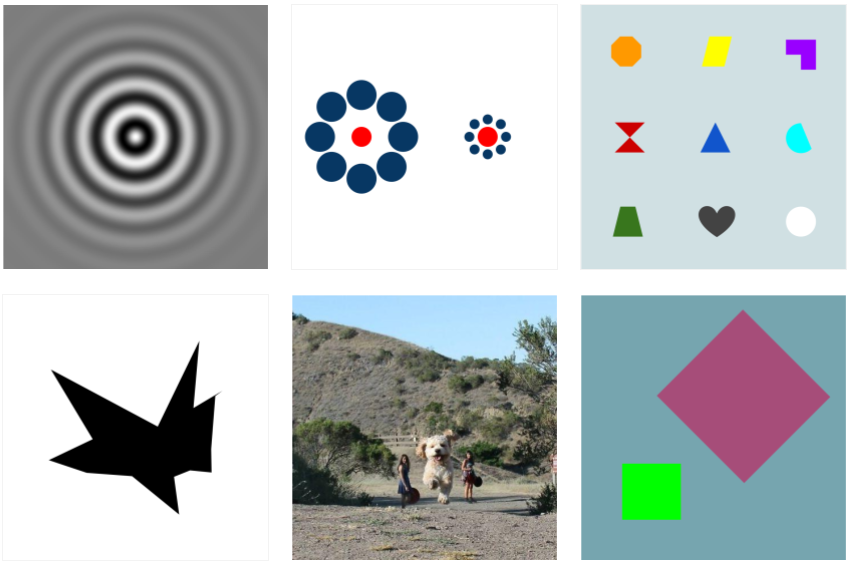
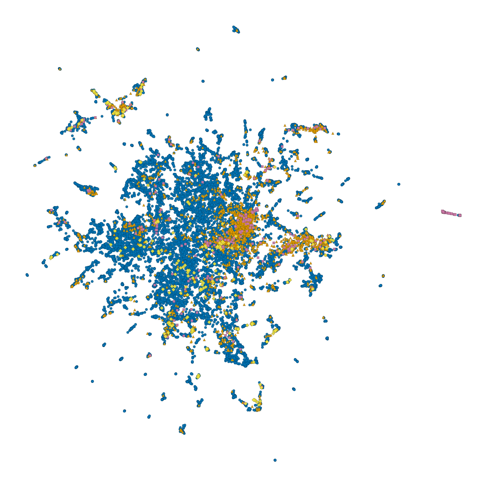

Stimulus Data
The LAION-fMRI dataset includes comprehensive visual stimuli presented to participants during fMRI scanning.
Stimulus Sets
The dataset may include multiple stimulus sets for different experiments:
stimuli/
├── localizer/ # Functional localizer stimuli
└── n_back/ # N-back task stimuli
Each set includes its own metadata file describing the specific stimuli and their properties.
Visual Stimuli
Stimulus Categories
The dataset includes a variety of visual stimuli:
Natural images: Photographs of natural scenes
Object categories: Various object types and categories
Scene categories: Indoor and outdoor scenes
Face stimuli: Human faces with varying expressions and identities
{kind=link}

Stimulus Format
Technical Specifications:
Image files: PNG/JPEG format
Resolution: 1024x1024 pixels
Color space: RGB
Bit depth: 8-bit per channel
Stimulus Metadata
File Organization
Stimulus files are organized as follows:
stimuli/
├── localizer/ # Functional localizer stimuli
│ ├── images/ # Stimulus image files
│ ├── category_01/
│ ├── category_02/
│ └── ...
│ ├── stimuli.tsv # Stimuli list and reference
│ ├── stimuli.json # Stimuli metadata
│ └── README.txt # Stimulus documentation
└── n_back/ # N-back task stimuli
Stimuli list and Reference
The stimuli.tsv file contains a list of all stimulus images along with their feature values, identifiers and categories.
stimulus_id category filename luminance contrast experiment_id duration
stim_0001 face face_001.png 127.5 0.42 exp_01 500
stim_0002 scene scene_001.png 115.2 0.38 exp_01 500
stim_0003 object object_001.png 132.1 0.45 exp_02 750
Metadata Fields
Each stimulus includes comprehensive metadata:
Primary Fields:
stimulus_id: Unique identifier for each stimulus
category: Primary category label
subcategory: Fine-grained category (if applicable)
filename: Image filename
presentation_order: Order of presentation in experiment
Visual Properties:
luminance: Mean luminance value
contrast: RMS contrast
spatial_frequency: Dominant spatial frequency
color_histogram: RGB color distribution
Experimental Information:
experiment_id: Which experiment used this stimulus
condition: Experimental condition
trial_type: Type of trial (e.g., target, distractor)
duration: Presentation duration in milliseconds
Stimuli Metadata
The stimuli.json file contains detailed metadata for the stimulus set:
{
"Name": "LAION-fMRI Localizer Stimuli",
"BIDSVersion": "1.8.0",
"License": "CC-BY-4.0",
"Authors": [
"ViCCo-Group"
],
"Description": "Visual stimuli used in the LAION-fMRI functional localizer experiment",
"StimulusPresentation": {
"ScreenSize": [1920, 1080],
"ScreenDistance": 60,
"ScreenRefreshRate": 60
},
"ImageProperties": {
"Resolution": [1024, 1024],
"ColorSpace": "RGB",
"BitDepth": 8,
"Format": "PNG"
},
"Categories": [
{
"CategoryID": "faces",
"CategoryName": "Human Faces",
"NumberOfStimuli": 120,
"Subcategories": ["neutral", "happy", "sad"]
},
{
"CategoryID": "scenes",
"CategoryName": "Natural Scenes",
"NumberOfStimuli": 120,
"Subcategories": ["indoor", "outdoor"]
},
{
"CategoryID": "objects",
"CategoryName": "Objects",
"NumberOfStimuli": 120,
"Subcategories": ["tools", "furniture", "vehicles"]
}
],
"VisualProperties": {
"MeanLuminance": 127.5,
"ContrastRange": [0.2, 0.6],
"SpatialFrequencyRange": [0.5, 8.0]
}
}
Distribution of Stimuli
{kind=link}

Distribution of stimuli across categories in the LAION-fMRI dataset.
Loading Stimulus Data
Using the Python Package
The laion-fmri-dataloader package provides convenient functions for loading stimulus data:
from laion_fmri_dataloader import LAIONfMRIDataset
import matplotlib.pyplot as plt
from PIL import Image
# Initialize dataset
dataset = LAIONfMRIDataset(data_dir='./laion-fmri-data')
# Load stimulus metadata
stimuli_metadata = dataset.load_stimuli(stimulus_set='localizer')
print(f"Total stimuli: {len(stimuli_metadata)}")
print(f"Categories: {stimuli_metadata['category'].unique()}")
# Load a specific stimulus image
stimulus_img = dataset.load_stimulus_image(
stimulus_set='localizer',
stimulus_id='stim_0001'
)
# Display the image
plt.figure(figsize=(8, 8))
plt.imshow(stimulus_img)
plt.title(f"Stimulus: {stimuli_metadata.loc[0, 'stimulus_id']}")
plt.axis('off')
plt.show()
# Get stimuli by category
face_stimuli = dataset.get_stimuli_by_category(
stimulus_set='localizer',
category='faces'
)
print(f"Face stimuli: {len(face_stimuli)}")
# Load multiple images at once
images = dataset.load_stimulus_images(
stimulus_set='localizer',
stimulus_ids=['stim_0001', 'stim_0002', 'stim_0003']
)
Filtering Stimuli
# Get all face stimuli
face_stimuli = stimuli[stimuli['category'] == 'face']
# Get stimuli from specific experiment
exp1_stimuli = stimuli[stimuli['experiment_id'] == 'exp_01']
# Filter by visual properties
high_contrast = stimuli[stimuli['contrast'] > 0.4]
Stimulus Validation
Quality Checks
All stimuli have undergone quality control:
Resolution verification: All images meet minimum resolution requirements
Color space validation: Correct RGB color space
Duplicate detection: No duplicate images
Metadata completeness: All required fields populated